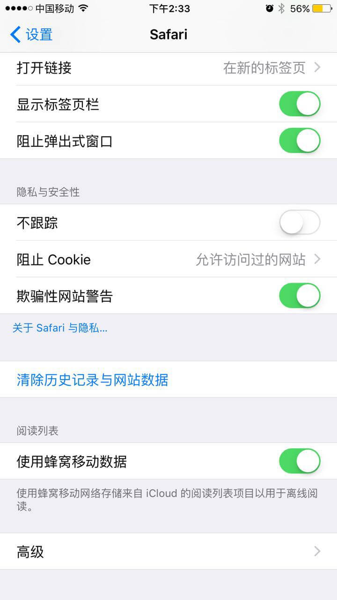
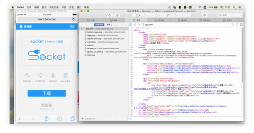

移动端前端开发真机调试攻略
最近一直在做用HTML5开发移动端页面,有些效果只有在真实的手机上测试才好调试,所以今天就在网上查了一下相关的调试方法,终于让我找到了一些特别好的方式。 下面是在网上找到的内容,根据现在的情况我自己做了一下整理。
一、IOS 移动端 （Safari开发者工具）
下面这一种是在电脑上调试已经上线了或者可以直接在手机上打开连接访问的网站,非常简单。在做一些迭代或细微修改的时候很有用。
参考地址 —— https://gold.xitu.io/entry/563ab66400b0bf37d79aa17d
手机端：设置 → Safari → 高级 → Web 检查器 → 开。
mac端：Safari → 偏好设置 → 高级 → 在菜单栏中显示“开发”菜单。
在 OS X 中启动 Safari 之后，以 USB 电缆正常接入 iOS 设备，并在此移动设备上启动 Safari。此时点击计算机上的 Safari 菜单中的“开发”，可以看到有 iOS 设备的名称显示，其子菜单项即为移动设备上 Safari 的所有标签页，点击任意一个开始调试。

便捷，简单，还可以调试外壳包裹的浏览器如微信。
备注：顺便提一下，要调试不同版本的ios，可以进xcode 进行下载不同的系统包（当然是在没有设备的情况下，土豪略过）
二、安卓移动端
1、chrome 调试方法
首先确保手机上和PC机上装有最新版本的chrome浏览器，其次是将手机的开发者选项打开并允许调试，然后将数据线将两台设备连接起来。在PC机上打开chorme，输入chrome://inspect ，然后在手机上打开chrome，然后手机会弹框询问是否允许调试，当然确定啦。有时候手机锁屏会断开，请拔掉usb重来。

点击inspect打开DevTools后，你可以选中页面中的DOM元素，同时设备中对应元素也高亮显示，也可使用DevTools中的Inspect Element 选中目标元素，可以实时与移动设备页面交互，方便的定位问题所在，进行代码调试，就能像pc端一样愉快的玩耍了。如果有问题，请检查chrome版本。
chrome的调试一般只可以调试chrome页面，但是其官方文档说还可以调试WebViews：
“On your computer, the chrome://inspect page displays every connected device, along with its open tabs and debug-enabled WebViews.”
需要说明调试WebView需要满足安卓系统版本为Android 4.4+，并且需要再你的APP内配置相应的代码，在WebView类中调用静态方法setWebContentsDebuggingEnabled，如下：
if (Build.VERSION.SDK_INT >=Build.VERSION_CODES.KITKAT) {
WebView.setWebContentsDebuggingEnabled(true);
以上配置方法适用于安卓应用内所有的WebView情形。
安卓WebView是否可调试并不取决于应用中manifest的标志变量debuggable，如果你想只在debuggable为true时候允许WebView远程调试，请使用以下代码段：
if (Build.VERSION.SDK_INT>= Build.VERSION_CODES.KITKAT) {
if (0 != (getApplicationInfo().flags &=ApplicationInfo.FLAG_DEBUGGABLE{
WebView.setWebContentsDebuggingEnabled(true);
我这里只写了个大概，如果有其他问题或者欲查看详细文档，看下面链接（自备梯子）：
https://developer.chrome.com/devtools/docs/remote-debugging注意：同样的你也可以在电脑上装安卓的虚拟机，推荐Genymotion ，一样的，想测什么版本，就自己下rom ，当然土豪当我没说。
Mac下启动http-server的方法汇总之nodejs
nodejs下BrowserSync 同步操作
我目前用的就是下面这种方式,你在手机上改动完保存之后马上能看得到,连刷新都省了,再回去看终端,其实是browser-sync一直在监听着,你的改动他能马上响应
另外,必须要说明的是,下面的js代码其实可以忽略,只要在命令行中输入这个命令browser-sync start --server --files="*",访问的地址就出来了,然后直接在手机上打开就行。
参考地址: http://fy98.com/2015/11/10/http-server-in-mac-os/和
http://yujiangshui.com/multidevice-frontend-debug/推荐使用browser-sync
下面是安装命令
1 npm install -g browser-sync
2 npm install --save-dev browser-sync
如果你的项目中使了bower、npm、gulp、grunt、webpack等这类的工具才需要做下面这一步
然后在package.json文件中指定启动命令：
1 "scripts": {
2 "start": "browser-sync start --server --files '*.css, *.html' "
3 }
browser-sync不仅可以当做http server，而且当目录下的html、js、css保存时还可以自动刷新页面，提高开发效率，重点推荐这个。
BrowserSync 是我最爱的多终端测试工具。在没有使用这个BrowserSync 之前的原始的测试流程一般是这样的：
先把本地的网页上传到远程服务器（因为好多设备都要去访问一个固定的地址），然后将网址输入到各个测试机的测试浏览器里面手动打开(或者使用浏览器插件等，生成二维码扫一下）。然后手机开始下载页面，需要等待下载。观看效果进行测试，每个测试机都要操作一遍。测试其他网页的时候，每个测试机重新输入网址、刷新。如果代码有修改，需要重新上传服务器进行刷新。而 BrowserSync 这个工具，可以用你局域网 IP 创建一个本地服务器，生成一个类似 http://10.189.249.135:3002 的 URL，这样所有与你电脑处在一个局域网的设备，都可以访问到你本地的页面。
下面这句不一定,我今天在用的时候就,Mac下的IP地址是 172.16.30.1**,手机上的IP地址172.16.30.1*4,手机和电脑联的都是公司的WI-FI。不知道这样算不算所有设备都连入一个无线局域网,反正我其他的操作都没有做,就直接在手机微信中打开BrowserSync生成的地址就可以了。
建议使用无线路由器搭建一个无线局域网，所有设备都连入这个无线局域网。Win 系统电脑用软件开启 Wifi 共享也是可以的，Mac 就比较悲剧了，只有在插网线的时候，可以开启 Wifi 共享功能。
BrowserSync 还会监听文件变动，当监听的文件发生变动，会自动刷新所有连接本地服务器的页面。BrowserSync 最主要的功能是同步，同步一切操作，当你在某个浏览器中触发的操作，会在所有测试浏览器中同步操作，例如在电脑上滚动页面，所有手机都会滚动页面；电脑上更换了 URL 测试另一个页面，所有手机都跳转到另一个页面。
应用 BrowserSync 工具之后的新版测试流程就变成这样了：
用 BrowserSync 开启本地服务器，所有测试设备连接到局域网中，依次打开 http://10.189.249.135:3002/（BrowserSync 创建的本地服务器地址）。在一台设备操作，观察其他设备的情况，修改了 CSS、HTML 或者 JS 代码，保存一下，自动在所有设备自动刷新。
BrowserSync 的使用非常简单，在要创建服务器的目录下面执行：browser-sync start --server --files="*" 命令即可，表示创建一个服务器并监听该目录下的文件变动。它也有提供 Grunt 和 Gulp 插件，更多的用法移步 BrowserSync 官方文档，这里不再赘述。
BrowserSync 的原理大体是这样的，它会在 HTML 页面里面插入 JS，然后监听页面操作。所以当你滚动页面或者跳转新页面，BrowserSync 可以捕获到这个操作，通过 Socket.io 向所有 Client 的 JS 发出操作指示，其他设备也会随之 scroll 或者 location.href 跳转等，实在太巧妙。
此外，两个 BrowserSync 的小提示：
BrowserSync 默认请求 index.html，如果你的目录里面没有这个文件夹，会返回 Cannot GET /，这时候你需要指定具体的目录、文件。
在开启 BrowserSync 的命令中，--files="*" 表示要监听变动的文件。如果你指定了 --files="css/*.css" 就表示只监听 css/ 下的所有 css 文件变动。如果遇到修改代码没有自动刷新的问题，可能是你监听的路径和文件有问题。对于 CSS 的修改，它会采用无刷新注入的方式，JS 和 HTML 的修改，它会采用刷新的方式。
以上便是我今天使用过的方法,我觉得蛮好用的,所以就记录下来了。
THE END